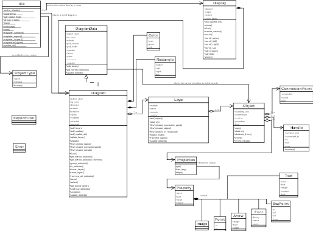
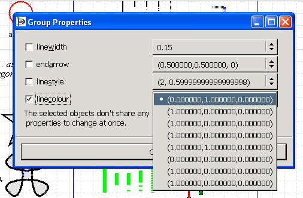

Dia contains a plug-in that allows scripting in Python.
Anyone that makes a Python script for Dia should post to the mailing list,
as including some more scripts would help both debugging and creation of
more scripts.
In the early years of the Dia Python facility there was a great lack of
documenation. To get you started there was some
mail
from Hans Breuer on the Python plug-in object structure and syntax.
Nowadays there are a lot more Python plug-ins provided with Dia. Some of them
are presented here. Also there is documentation integrated with the bindings -
updatable with e.g. Help/PyDia HTML Docs (/tmp/dia.html)
pydiadoc.py
generates a new diagram which contains all objects
of dir(dia). Now fills attributes and operations by using
Python reflexion ...
The classes of the following diagram are automatically generated by
pydiadoc.py. The generation includes the
class member as well as the member functions. The plug-in did
not do the layout of the diagram not the connections of the objects.

You can download the
diagram in Dia's native format.
diasvg.py
diasvg.py is an export filter for Dia implemented in Python. It is best
represented by what it can do:
[Shown should be the same diagram as above but rendered from vectors]
If your browser does not support embedded svg you
can download the diagram here or dowload a
svg capable browser.
diasvg_import.py
diasvg_import.py is an import filter for Dia implemented in Python. Like most
of the other Dia Python plug-ins it serves two purposes. For one it is to identify
particular weakness in PyDia. Making it work did not only involve the development
of the plug-in itself but also to extend and fix the underlying Python bindings
implmented in C.
But of course the plug-in can be used for real work. In some aspects it superseeds
the Dia import filter in C. Though both existing import filter will
never
support any SVG in the wild.
codegen.py
Another 'export filter' is
codegen.py. In contrast to the svg export it uses the PyDia 'Object Renderer'
interface. For code generation it would not be useful to get the graphical
reprensentation of the diagram to export. Instead the plug-in only implements
dia.ExportFilter.begin_render()
|
iterating over the passed in data's (which is of type dia.DiagramData)
layers and their objects to extract class as well as inheritance information from
the respective object types ("UML - Class" and later "UML - Generalization")
|
| and | |
dia.ExportFilter.end_render()
|
which is implemented differently for both formats namely C++ and Python.
|
group_props.py
group_props.py is a prototype providing one of Dia's
most often requested core functionality: the ability to change the properties
of multiple objects at once. It not only shows the integration of a plug-in into
the menu but also some interaction done via pygtk.

center.py
Scripting Dia in Python is simple. If you dont know where to start you may as well ask on the mailing list.
Maybe you are lucky and get your
plug-in written as example.
import sys, dia
def center_objects (objs) :
r = objs[0].bounding_box
cx = (r.right + r.left) / 2
cy = (r.bottom + r.top) / 2
for o in objs[1:] :
r = o.bounding_box
(x, y) = o.properties["obj_pos"].value
dx = (r.right + r.left) / 2 - cx
dy = (r.bottom + r.top) / 2 - cy
o.move (x - dx, y - dy)
def dia_objects_center_cb (data, flags) :
grp = data.get_sorted_selected()
if (len(grp) > 1) :
center_objects (grp)
data.update_extents ()
dia.active_display().diagram.add_update_all()
dia.register_callback ("Center Objects",
"<Display>/Objects/Center",
dia_objects_center_cb)
{kind=link}